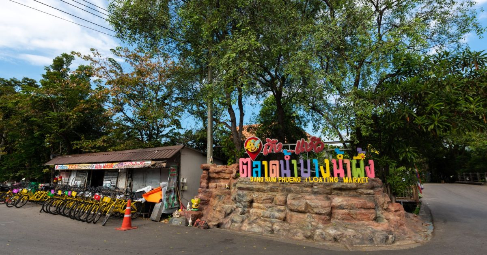

ข้อมูลเพิ่มเติมเกี่ยวกับสถานที่
1.บางกระเจ้า

บางกะเจ้า ปอดสีเขียวแห่งสมุทรปราการ เป็นสถานที่พักผ่อนหย่อนใจยอดนิยม ขึ้นชื่อเรื่องธรรมชาติร่มรื่น เหมาะสำหรับการปั่นจักรยาน (ค่าเช่าจักรยานวันละ 50 บาท) ชมวิว สูดอากาศบริสุทธิ์ สามารถเดินทางได้ทั้งรถส่วนตัว หรือสามารถนั่งรถโดยสารสาธารณะ มาลงที่ตลาดบางน้ำผึ้ง หรือนั่งเรือจากท่าเรือบางนามาลงที่ท่าเรือวัดบางน้ำผึ้งนอกก็ได้
เปิดทุกวัน ตั้งแต่เวลา 6.00-19.00 น
2. ตลาดน้ําบางน้ําผึ้ง

ตลาดน้ำบางน้ำผึ้ง ไม่ได้มีดีแค่บรรยากาศริมคลองที่ร่มรื่น แต่ยังขึ้นชื่อเรื่องของกินอร่อย ของฝากหลากหลาย และสินค้าแฮนด์เมดสุดเก๋ ที่นี่ตั้งอยู่ในอำเภอพระประแดง จังหวัดสมุทรปราการ เป็นที่เที่ยวที่ไม่ไกลจากบางนาเลย
เปิดเฉพาะวันเสาร์ อาทิตย์ และนักขัตฤกษ์ 08.00 – 16.00 น
3. หอชมเมือง สมุทรปราการ

หอชมเมืองสมุทรปราการ แลนด์มาร์คแห่งใหม่ วิว 360 องศา สามารถชมวิวเมืองสมุทรปราการ แม่น้ำเจ้าพระยา และกรุงเทพมหานครได้แบบพาโนรามา อีกทั้งยังมีนิทรรศการเกี่ยวกับประวัติศาสตร์และวัฒนธรรมของสมุทรปราการ
เปิดทุกวัน เวลา 10.00 – 20.00 น.
4. สายลมบางปู
สายลมบางปู ร้านอาหารริมทะเล บรรยากาศดี วิวพระอาทิตย์ตกดินสวยงาม นอกจากอาหารอร่อยๆก็มีคาเฟ่ที่ขายทั้งเครื่องดื่มและที่พลาดไม่ได้เบยก็คือเครปกล้วยที่กำลังเป็นกระแสอยู่ตอนนี้ อีกทั้งยังมี workshop เพ้นท์เซรามิค หรือเพ้นท์ถุงผ้าต่างๆให้ทำอีกด้วย
เปิดทุกวัน 11.00-22.00 น.
5. พิพิธภัณฑ์ช้างเอราวัณ

พิพิธภัณฑ์ช้างเอราวัณ ได้รับการยกย่องว่าเป็นหนึ่งในสถานที่ท่องเที่ยวที่สำคัญและโดดเด่นที่สุดแห่งหนึ่งของจังหวัดสมุทรปราการ นอกจากประติมากรรมช้างเอราวัณแล้ว ภายในพิพิธภัณฑ์ยังมีศิลปวัตถุทางวัฒนธรรมและศาสนา งานประติมากรรม และงานศิลปะร่วมสมัยอีกมากมายให้ชม
ค่าเข้าชม: ผู้ใหญ่ 400 บาท เด็ก (อายุ 3-12 ปี) 200 บาท
เวลาเปิดปิด: 9.00 – 18.00
6. เมืองโบราณ
เมืองโบราณ เป็นพิพิธภัณฑ์กลางแจ้งที่ใหญ่ที่สุดในโลก ตั้งอยู่บนพื้นที่กว่า 800 ไร่ เป็นแหล่งรวบรวมโบราณวัตถุ สถาปัตยกรรม และประติมากรรมไทยจากทั่วประเทศ ภายในเมืองโบราณ แบ่งออกเป็นโซนต่างๆตามภูมิภาคของไทย เช่น ภาคเหนือ ภาคอีสาน ภาคกลาง ภาคใต้ และภาคตะวันออก
ค่าเข้าชม: ผู้ใหญ่ 500 บาท เด็ก (อายุ 3-12 ปี) 250 บาท
เวลาเปิดปิด: 8.00 – 18.00 น.
7. ฟาร์มจระเข้และสวนสัตว์สมุทรปราการ
เป็นสถานที่ท่องเที่ยวยอดนิยมในอำเภอเมืองสมุทรปราการที่เปิดให้บริการมานานกว่า 60 ปี ภายในฟาร์มมีจระเข้กว่า 40,000 ตัว เป็นฟาร์มจระเข้ที่ใหญ่ที่สุดในเอเชียตะวันออกเฉียงใต้
กิจกรรมไฮไลท์ของฟาร์มจระเข้คือการชมความกล้าหาญของนักแสดงที่ลงไปจับจระเข้ขนาดใหญ่ด้วยมือเปล่า นอกจากนี้ยังมีสัตว์นานาชนิดให้ดูอีกมากมาย และมีพิพิธภัณฑ์ไดโนเสาร์ซึ่งจัดแสดงกระดูกและหุ่นจำลองไดโนเสาร์ขนาดเท่าตัวจริง พร้อมฉายสไลด์มัลติวิชัน ว่าด้วยเรื่องของมนุษย์และสัตว์ดึกดำบรรพ์
ค่าเข้าชม: ผู้ใหญ่ 80 บาท เด็ก (อายุ 4-12 ปี) 40 บาท
เวลาเปิดปิด: 8.00 – 18.00 น.
8. เมกา บางนา

เมกา บางนา ห้างสรรพสินค้าและศูนย์การค้าครบครัน สุดคึกคัก ใจกลางย่านบางนา เป็นศูนย์การค้าขนาดใหญ่ครบวงจร รองรับผู้มาใช้บริการมากกว่า 300,000 คนต่อวัน ภายในศูนย์การค้ามีร้านค้ากว่า 1,000 ร้าน ทั้งร้านอาหาร โรงภาพยนตร์ สวนสนุก และสถาบันชั้นนำอีกมากมาย
เวลาเปิดปิด: 10.00 – 22.00 น.
9. Beat Active
eat Active เป็นศูนย์ออกกำลังกายในร่มขนาดใหญ่ ตั้งอยู่ภายในศูนย์นิทรรศการและประชุมไบเทคบางนา ประกอบไปด้วยโซนต่างๆมากมาย มีตั้งแต่ปีนเขา ตีกอล์ฟ เตะบอลไปจนถึงสกี รวมแล้วกว่า 55 กิจกรรม เหมาะสำหรับทุกเพศทุกวัย เป็นอีกหนึ่งที่เที่ยวบางนาที่วัยรุ่นไม่ควรพลาด
เวลาเปิดปิด: 06.00 – 23.00 น
10. Pororo Aquapark
Pororo AquaPark Bangkok เป็นสวนน้ำธีมการ์ตูนยอดนิยม ตั้งอยู่บนชั้นดาดฟ้าของห้างสรรพสินค้าเซ็นทรัล บางนา เป็นสวนน้ำแห่งแรกของโลกที่ตกแต่งในธีม Pororo เพนกวินน้อยสุดฮิตจากเกาหลี เหมาะสำหรับทุกเพศทุกวัย มาสัมผัสประสบการณ์ความสนุกสนาน เย็นสบาย คลายร้อน
เวลาเปิดปิด: 10.30 – 19.00 น. (วันจันทร์ – ศุกร์)
10.00 – 19.00 น. (วันเสาร์ – อาทิตย์ และวันหยุดนักขัตฤกษ์)
.